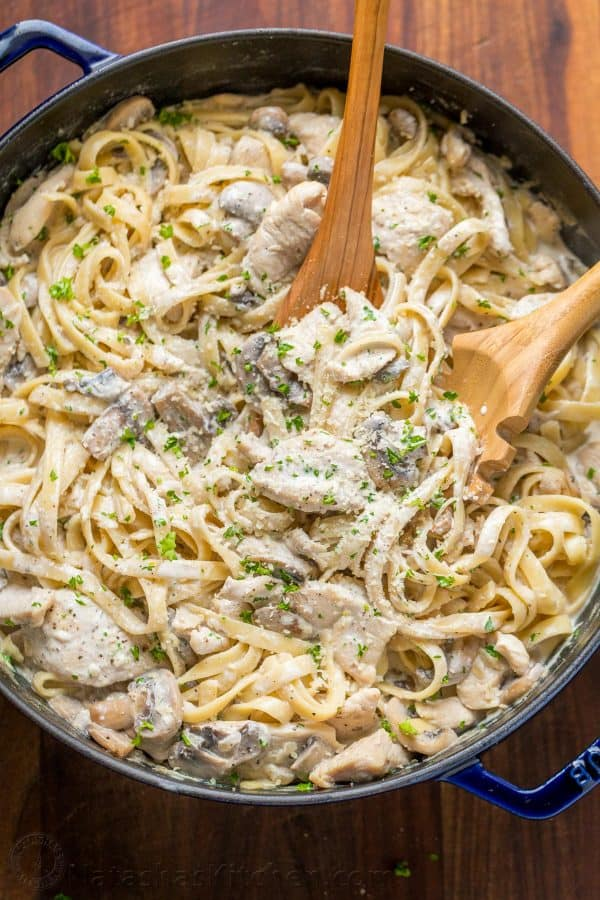

Creamy Chicken Alfredo

I learned how to make ,creamy chicken Alfredo from my dad who has always been an incredible cook and amazing teacher. Chicken Alfredo was always my favorite. A lot of the recipes I see that are worthwhile are too much work because you have to make your own sauce, and those that don't have you make your own have no flavor. This recipe shows you how to take plain, bland, store-made sauce and make it more than restaurant-worthy.
Ingredients
- 2lbs boneless skinless chicken breasts
- salt and black pepper to taste
- 2 (16oz) packages of thing spaghetti
- 2tbsp italian seasoning
- 2tbsp garlic powder
- 2tbsp chopped onion
- 2tbsp chopped fresh basil
- 1tbsp onion powder
- 1/2 tbsp cayenne pepper
- 1.5 cups shredded parmesan cheese
- 2 cups chopped broccoli (optional)
Directions
- Season chicken with salt and pepper. Heat a large skillet over medium-high heat. Add chicken and cook until no longer pink in the centers and juices run clear, 7 to 10 minutes.
- Bring a large pot of lightly salted water to a boil. Cook thin spaghetti in the boiling water, stirring occasionally, until tender yet firm to the bite, 8 to 10 minutes.
- Meanwhile, add Alfredo sauce to the chicken along with Italian seasoning, garlic powder, onion, basil, salt, black pepper, onion powder, and cayenne. Bring to a slight boil; stir in Parmesan cheese. Cook mixture until cheese is melted and you are able to lift a spoon out of the sauce without cheese hanging onto it, 3 to 5 minutes.
- Place a steamer insert into a saucepan and fill with water to just below the bottom of the steamer. Bring water to a boil. Add broccoli, cover, and steam until tender, 2 to 6 minutes. Add broccoli to sauce.
- Drain cooked pasta. Scoop into individual serving bowls and pour sauce on top.
Cook's note
You can replace the fresh onion with more onion powder if preferred.
Season the chicken as desired. The seasoning amounts are more of an estimate. You can use as much or as little as you want — the same for the Parmesan cheese. I suggest buying two different flavors of Alfredo. I usually use the Classico brand and buy two jars of the sun-dried tomato flavor and two jars of a more spicy flavor, which is also why I add the Parmesan, as it offsets some of the heat.